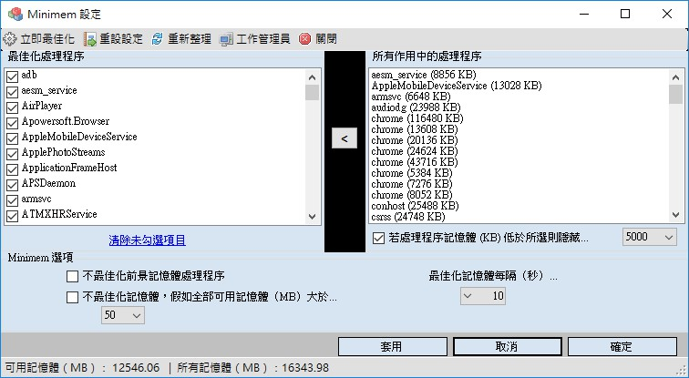

Minimem 記憶體最佳化管理工具

Minimem最初僅針對Firefox開發，現在可以減少任何應用程序的內存佔用。它在後台運行，可以設置為使用非常直觀的圖形界面優化盡可能多的程序。與其他內存優化產品不同，它使您可以完全控制要優化的應用程序，時間和頻率，以及在需要和相關時僅優化內存的可能性。
它通過從所選進程中刪除盡可能多的非必要內存頁來優化內存。它定期執行，也可以由用戶定義，默認情況下每30秒執行一次，但使用高級池機制確保Minimem的CPU使用率始終保持低水平。然後，這會優化您的應用程序，這些應用程序可以在需要時將這些頁面加載回來，並使您的整個系統在內存受限時執行得更好。
Minimem在後台運行，完全不侵入。它會保留在您的托盤中，您可以隨時訪問其設置，並記住您喜歡的設置，以獲得最佳的易用性。它的直觀GUI應該可以用於任何類型的用戶，因此不需要特定的技能來利用這個偉大的工具。
軟體基本資訊